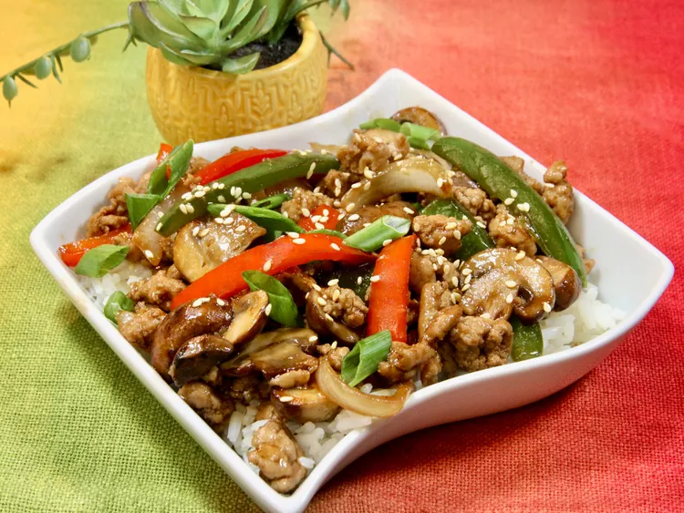

Ground turkey Stir Fry with Vegetables

This ground turkey stir fry with vegetables has a flavor-packed sauce, and is on the table in 30 minutes. We enjoy ours with rice or noodles for a quick weeknight dinner.
Ingredients
Stir-fry Sauce
- 1/3 cup low-sodium soy sauce
- 2 tablespoons rice vinegar
- 1 tablespoon lime juice
- 1 tablespoon brown sugar
- 1 tablespoon sesame oil
- 2 teaspoons cornstarch
Ground Turkey and Veggies
- 2 tablespoons olive oil, divided
- 2 cups sliced baby bella mushrooms
- 1/2 red bell pepper, sliced
- 1/2 green bell pepper
- 1/2 small onion, peeled and sliced vertically
- 1 pound ground turkey
- 2 gloves garlic, minced
- sliced green onions and toasted sesame seeds for garnish
Directions
Step 1
- Whisk soy sauce, rice vinegar, lime juice, brown sugar, sesame oil, and cornstarch together in a small bowl; set aside.
Step 2
- Heat 1 tablespoon oil in a large skillet over medium heat. Add the mushrooms, red and green bell peppers, and onion, and cook just until vegetables are tender, 5 to 6 minutes. Remove to a plate.
Step 3
- Add the remaining tablespoon oil to the skillet. Add ground turkey and cook,breaking up the meat into chunks with a spatula, until lightly browned and cooked through, 5 to 6 minutes. Stir in garlic and cook until fragrant, 30 seconds to 1 minute.
Step 4
- Reduce heat to medium-low, return vegetables to the skillet, give sauce a good stir, and pour over meat and veggies. Stir until everything is well coated, and simmer until the sauce is thickened slightly, about 2 minutes.
Step 5
- Taste, and adjust seasoning. Garnish with green onions and sesame seeds, and serve immediately